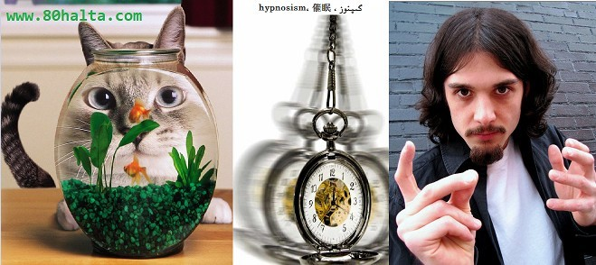

ئالدىنقى يازما
ئالدىنقى يازما كېيىنكى يازما
كېيىنكى يازما
گىپنوز
ئاپتور:GoodLuck ۋاقتى:2011-04-17


[font=UKIJ TUZ TOM][size=14]ئەسلى ئادرېسى: http://baike.baidu.com/view/4561.htm
تەرجىمە قىلغۇچى: Goodluck (ئەنۋەرجان)
ھالقىلىق سۆز : گىپنوز ، hypnosism، 催眠
ئەسكەرتىش: بۇ ماقالە 80 خالتا تور بېكىتىنىڭ ھاۋالىسى بويىچە، خەنزۇچىدىن تەرجىمە قىلىندى، تەرجىمىدە خاتا كەتكەن، كەمتۈك بولۇپ قالغان، ئۇقۇم خاتالىقى پەيدا بولغان جايلىرى بولسا، ئۇستازلارنىڭ كۆرسىتىپ بېرىشىنى سورايمەن، ماقالىنى 80 خالتا تور بېكىتىنىڭ روخسىتىسىز باشقا تور بېكەتلەردە ئېلان قىلماڭ!
گىپنوز (خەنزۇچە 催眠 ئېنگىلىزچە hypnosism دەپ ئاتىلىدىغان بولۇپ، گىرىتسىيە رىۋايەتلىرىدىكى Hypnos نىڭ نامىدىن كەلگەن) ھەرخىل تېخنىكىلار سەۋەبلىك پەيدا بولىدىغان ئىدىيىدىكى بىر خىل يوشۇرۇن ھالەتنى كۆرسىتىدۇ. بۇ ۋاقىتتىكى ئادەم باشقىلارنىڭ بەرگەن ئىشارەتلىرىگە ئەڭ يۇقىرى دەرىجىدىكى ئىنكاسچانلىققا ئېگە بولىدۇ. بىر خىل يۇقىرى دەرىجىدىكى ئىشارەت تەسىېرگە ئۇچىراش خاراكتىرلىك ھالەت بولۇپ، ئاڭ، خاتىرە، كونترول قىلىشتا ماس ئىنكاس قايتۇرىدۇ.
گىپنوز ئۇقۇمى
گىپنوزنىڭ ئېنىقلىمىسى: ئادەم ۋە ھايۋانلارغا كۆرۈش سېزىمى، ئاڭلاش سېزىمى ۋە سىلاش سېزىمى ئارقىلىق غىدىقلاش ئېلىپ بېرىپ، يېرىم ئۇيقۇ ھالىتىگە كەلتۈرۈشنى كۆرسىتىدىغان بولۇپ، ئادەملەرگە قارىتا تىل سېزىمى ئىشلىتىلسىمۇ بولىدۇ (تار مەنىسى). ئالاھىدە غىقىدلاشلارغا قارىتا پىسخىك ئۆزگىرىش ھالىتىنىڭ پەيدا بولىشىنى كۆرسىتىدۇ (كەڭ مەنىسى) .
بۇخىل ئۇخلاش ھالىتى ئادەتتىكى ئۇخلاشقا ئوخشىمايدۇ.
گىپنوز تېخنىكىسى ئىشارە قاتارلىق ۋاستىلەر ئارقىلىق گىپنوزلانغۇچىنى ئۇيقۇ ھالىتىگە كىرگۈزۈپ، ھەيران قالارلىق تەسىر ھاسىل قىلىدىغان بىر خىل سىېھرى تېخنىكا. گىپنوز ئادەمنى ئىلھاملاندۇرۇش ئارقىلىق (مەسىلەن ئازادە قىلىش، يەككە غىدىقلاش ئېلىپ بېرىش، دېققەتنى يېغىش، ئويلاش قاتارلىق) پەيدا قىلىنىدىغان بىر خىل ھەم ئۇيغۇ ھەم ئويغاق ھالەتتىكى ئاڭ غۇۋالىشىدىغان پىسخىك ھالەت. ئالاھىدىلىكى بولسا گىپنوزلانغۇچىدا مۇستەقىل ھۆكۈم قىلىش، مۇستەقىل خاھىش ھەركىتىنىڭ ئاجىزلىشىشى ياكى يوقىلىشى، تۇيغۇ، سېزىمدا ئېغىپ كېتىش ياكى يوقىلىش كۆرۈنىدۇ. گىپنوز قىلىش جەريانىدا گىپنوزلانغۇچى گىپنوز ئۇستىسىنىڭ ئىشارىسى ۋە كۆرسەتمىسىگە بويسۇنۇپ، ماس بولغان ئىنكاس قايتۇرىدۇ. گىپنوزنىڭ ئاجىز-كۈچلۈكلۈكى گىپنوزلانغۇچىنىڭ گىپنوز تەسىرچانلىقى (催眠感受性) ، گىپنوز ئۇستىسىنىڭ ماھارىتى قاتارلىقلارنىڭ ئوخشاش بولماسلىقىغا قاراپ ئوخشاش بولمايدۇ.
گىپنوز تېخنىكىسىنىڭ قىسقىچە تارىخى
گىپنوز تېخنىكىسى بولسا بىر تۈرلۈك قەدىمى ۋە ھاياتى كۈچكە تولغان پىسخىك تەكشەش تېخنىكىسى. گىپنوز مۇتەخەسىسى خاۋ بىن (郝滨) ئەپەندىم گىپنوزنىڭ تەرەققىياتىنى ئىلاھىيەت دەۋرى(神学时代)، ئاقار جىسىم مېخانىكىسى دەۋرى(流体力学时代) ۋە پىسىخوفىزىئولوگىيىلىك دەۋر(心理生理时代) دەپ ئۈچ دەۋرگە بۆلگەن.قەدىمدە گىپنوزغا ئوخشايدىغان نۇرغۇنلىغان خاتىرىلەر ساقلانغان، پەن-تېخنىكا تەرەققى قىلمىغانلىقتىن، ئۆزى ۋە سىرىتقى دۇنيادىكى بىر قىسىم كۈچلەرنىڭ ياردىمى بىلەن بەزى كېسەللەرنى ساقايتقان. مىسال ئالساق بۇتخانىدىكى راھىبلار ياكى چىركاۋلاردىكى پوپلار نوم ئوقۇش، ۋەز ئېيتىش قاتارلىق ئۇسۇللارنى قوللانغان، بۇلار ئۆزىنى گىپنوز قىلىش رولىنى ئوينىغان. بۇ گىپنوزنىڭ ئىلاھىيەت دەۋرى.
18-ئەسىردە ئۆتكەن ئەسمونىڭ قارىشىچە كېسەلىك، ئادەم بەدىنىدىكى ماگىنىت مەيدانىنىڭ توسالغۇغا ئۇچرىشىدىن بولىدىغان بولۇپ، سىرىتتىن كۈچ بېرىپ ماگىنىت مەيدانىنى راۋانلاشتۇرغاندا كېسەلنى داۋالاپ ساقايىتقىلى بولىدىكەن.
1841- يىلى 11- ئايدا ئەنگىلىيىلىك داڭلىق تاشقى كېسەللىكلەر دوختۇرى برەيىد بىر شىۋىتسارىيىلىك ئۇستىنىڭ گىپنوز ئارقىلىق كېسەل داۋالاش تېخنىكىسىنى كۆرگەندە، ئۇ قۇسۇر ئىزدەپ ساختىلىقنى تېپىپ چىقماقچى بولغان بولۇپ، نەتىجىدە ھىچقانداق يوچۇق تاپالمىغان. شۇنىڭ بىلەن ئۇمۇ گىپنوز تەتقىقاتى ۋە قوللىنىلىشىغا كىرىشىپ كەتكەن. گىپنوز ئادەمنىڭ تۇيغۇ سەزگۈرچانلىقىنى ئۆزگەرتىدىغان بولغاچقا، 1841- يىلى برەيىد گىپنوزنى مەس قىلىش، تىنىچلاندۇرۇشقا ئىشلەتكەن. برەيىد خرۇستال توپقا تىكىلىپ قاراتقۇزۇش ئارقىلىق گىپنوز قىلغان، ئۇ كۆرۈش نىرۋىپلىرىنىڭ چارچاش كۆز قارىشىنى ئوتتۇرغا قويغان بولۇپ، بۇ ئۇيقۇغا ئوخشايدىغان بىرخىل ھالەت دەپ قارىغان. بۇ خىل ئادەمنى ئويغاق بىلەن ئۇيقۇ ھالىتىنىڭ ئوتتۇرسىدىكى ھالەتكە كىرگۈزۈش گىپنوز تېخنىكىسىدۇر(برەيىد تۇنجى قېتىم ئوتتۇرغا قويغان).
ھازىرقى گىپنوز ئېلىمى نەزەرىيىسىنىڭ ئەڭ يېڭى تەرەققىياتى بولسا ئىككى قاتلاملىق تەلىمات:
بىرىنچى قاتلام: ماددى قاتلام-مېڭە نېرۋا سىستېمىسىنىڭ ئىقتىدارى، مىڭە نىرۋىسى پىسخىكىلىق ئىشارىنى تاپشۇرۇۋالغاندىن كېيىن، ساقلاپ، ئاندىن ئانالىز قىلغاندىن كېيىن، نىرۋا بىئولوگىيىسىنىڭ ئوزگىرىشىدىن ئۆتكۈزۈپ، فىزىئولوگىيىلىك ھەركەتكە تەسىر كۆرسىتىپ، ئىچكى ئاجراتما ۋە نىرۋا سېستىمىسىدا ماس ئۆزگىرىش ھاسىل قىلىپ، گىپنوزلانغان ھالەتنى ھاسىل قىلىدۇ.
ئىككىنچى قاتلام: شەخىسنىڭ پىسخىك پائالىيىتىنىڭ قوبۇل قىلىش ئەھۋالى، ئاساسلىقى پىسخىك ئاپالىيەتنىڭ رولى. مەسىلەن: ئىشارە قىلىش. گىپنوز ھالەتتىكى ئىشارە خاراكتىرلىك كۆرسەتمىنىڭ رولى تېخىمۇ چوڭ بولىدۇ.
گىپنوز ھالەتكە كىرگەندىن كېيىن، گىپنوز ئۇستىسى بىلەن گىپنوزلانغۇچى ئارىسىدىكى يەككە لىنىيەلىك مۇناسىۋەت، گىپنوزلانغۇچىنىڭ فىزىئولوگىيىلىك پائالىيىتى ۋە پىسخىك سېزىمىدە ئاكتىپ ئۆزگىرىش پەيدا قىلىدۇ. مېڭىدىكى ئاتسېتىلخولىن(ئاجراتما قانچە كۆپ بولسا ھەرىكەت شۇنچە ئاجىز بولىدۇ)، دوپامىن(ئاجراتما قانچە كۆپ بولسا شۇنچە جىددى بولىدۇ)، چارچاش ئىلمىنىتى قاتارلىق ئاجراتمىلاردا ئۆزگىرىش بولۇپ، سىپماتىك، پاراسىمپاتىك نېرۋىلارنىڭ تەڭپۇڭلىقىغا تەسىر كۆرسىتىدۇ، شۇنداق قىلىپ ئادەم بەدىنى ئەزالىرىنىڭ ئىقتىدارىنى كۈچەيتىدۇ؛ شۇنىڭ بىلەن بىر ۋاقىتتا گىپنوزلانغۇچى گىپنوز ئۇستىسىنىڭ بۇيرۇقىغا بوي سۇنۇپ ۋە ھەمكارلىشىپ، گىپنوز ئۇستىسىنىڭ ياردىمى ئاستىدا كەيپىياتنى ياخشىلاپ، بېسىمنى تەڭشەپ، كۆڭۈلدىكى تۈگۈنلەر يېشىلىپ، يوشۇرۇن ئىقتىدار ئاشكارىلىنىدۇ. مانا بۇ گىپنوز ئۇستىلىرىنىڭ قانداق قىلىپ جىسمانى ۋە روھى جەھەتتىن كونترول قىلالايدىغانلىقىنىڭ سەۋەبى.
زادى نېمىنى گىپنوز دەيمىز؟
ئەمەلىيەتتە، بىر ئادەم ئۆزىنىڭ تۇيغۇسى بىلەن ئالاقە ئورنىتىپ، ئۆز قەلبىدىكى نەرسىلەرنى ئويلىغاندا مەلۇم دەرىجىدىكى گىپنوز ھالىتىدە بولغان بولىدۇ. گىپنوز تېخنىكىسى ئالاھىدە بولغان غۇۋا يىتەكلەش ئۇسۇلى ئارقىلىق، ئادەمنى ئۇيغۇ بىلەن ئويغاقلىق ئارىسىدىكى بىر خىل ھالەتكە كىرگۈزىدۇ، بۇ خىل ھالەتتە ئادەمنى سەزگۈسى نىسبەتەن ئاجىز ھالەتكە كىرىپ، يوشۇرۇن تۇيغۇلىرى ھەرىكەتكە كېلىدۇ، شۇ سەۋەبلىك ئادەمنىڭ پىسخىك پائالىيىتى ( بىلىش تۇيغۇسى، ھىسىياتى، تەپەككۇرى، ئىرادىسى ۋە قىلىقى قاتارلىق پىسخىك پائالىيەتلەرنى ئۆز ئىچىگە ئالىدۇ) گىپنوز ئۇستىسىنىڭ سۆز-ھەرىكەتلىرى بىلەن زىچ مۇناسىۋەتتە بولىدۇ، بۇ خىل ھالەتنى كەلتۈرۈپ چىقىرالايدىغان تېخنىكىنى گىپنوز تېخنىكىسى دەپ ئاتايمىز.
گىپنوز ئاساسى ھالىتى
گىپنوزنىڭ ئىككى ئاساسى ھالىتى بار، يەنى ئانا شەكىلدىكى گىپنوز ۋە ئاتا شەكىلدىكى گىپنوز، دىيىلىۋاتقان ئانا شەكىلدىكى گىپنوز بولسا، ئىنتايىن كۆڭۈلچەكلىك بىلەن گىپنوزلانغۇچىنىڭ پىسخىك مۇداپىئە سىزىقىنى بۆسۈپ ئۆتۈشنى كۆرسىتىدۇ، مۇندانچە ئېيىتقاندا سىلىق-سىپايە ئۇسۇل بىلەن ھۇجۇم قىلىش. ئاتا شەكىلدىكى گىپنوز بولسا بۇيرۇق تۈسىنى ئالغان سۆز-جۈمىلىلەر ئارقىلىق گىپنوزلانغۇچىنى قارشى تۇرالمايلا قالماستىن، بويسۇنمىسا بولمايدىغان ھالەتكە چۈشۈرۈپ قويۇشنى كۆرسىتىدۇ. گىپنوز قىلىش جەريانىدا كۆپىنچە ئوخشاش بولمىغان ئوبىكىتلارغا، ياكى ئوخشاش ئوبىكىتنىڭ ئوخشاش بولمىغان ۋاقتى، ئورنى، شارائىتى قاتارلىقلارغا قاراپ ئوخشاش بولمىغان ئۇسۇل قوللىنىلىدۇ.
گىپنوز تېخنىكىسىنىڭ تۈرى
گىپنوز تېخنىكىسىنىڭ تۆۋەندىكىدك تۈرلىرى بار:
1. گىپنوز قىلغۇچىغا نىسبەتەن ئېيىتقاندا: 1) ئۆزىنى ئۆزى گىپنوز قىلىش 2) باشقىلار گىپنوز قىلىش، يەنى گىپنوز ئۇستىلىرى گىپنوز قىلىش
2. ئىشارا شارائىتلىرىغا نىسبەتەن ئېيىتقاندا:1) سۆزلەش ئارقىلىق گىپنوز قىلىش 2) مەشغۇلات ئارقىلىق گىپنوز قىلىش، يەنى گەپ-سۆز ئىشلەتمەي گىپنوز قىلىش. ئۇ قىلىق، ھەرىكەت، مۇزىكا ياكى ئېلىكتىر ئېقىمى قاتارلىقلارنى ئىشارە ۋاستىسى قىلىپ گىپنوز قىلىش مەقسىتىگە يېتىدىغان ئۇسۇل.
3. بىلىش ھالىتىگە نىسبەتەن ئېيىتقاندا: 1) ئويغاق ھالەتتىكى گىپنوز 2) ئۇيقۇ ھالەتتىكى گىپنوز
ۋەھاكازالار ...
گىپنوزنىڭ ئۆلچەملىك تەرتىپى
گىنپوز بەش باشقۇچقا بۆلۈپ ئېلىپ بېرىلىدىغان بولۇپ، ئۇلار:
1. دىئاگنوز (Diagnosis) : گىپنوز قىلىنغۇچىنىڭ مەقسىتى ۋە تەلىپىنى چۈشىنىپ، ئۇنىڭدىن گىپنوزغا كۆز قاراشلىرىنى سوراپ، گۇمانلىرىنىڭ جاۋابىنى بېرىپ، سەل تۇرۇپ گىپنوز قىلغاندا قانداق ئىشلارنىڭ يۈز بېرىدىغانلىقىنى بىلدۈرۈش. كۆپىنچە ئەھۋاللاردا گىپنوز ئۇستىسى ئازراق ۋاقىت سەرىپ قىلىپ، گىپنوز ھەققىدە قىسقىچە چۈشەنچە بېرىسى مۇمكىن، چۈنكى كۆپىنچە كىشىلەرنىڭ گىپنوزغا بولغان چۈشەنچىسى كەمچىل، بۇ كەمچىل چۈشەنچىلەرنىڭ ئىچىدىكى كۆ قىسىم چۈشەنچىلەر خاتا.
2. يىتەكلەش باسقۇچى(Induction) : گىپنوز ئۇستىسى سۆز ئارقىلىق ، قارشى تەرەپنى گىپنوز ھالىتىگە كىرگۈزىدۇ. ئادەتتە كۆپ ئىشلىتىلىدىغان يىتەكلەش ماھارەتلىرىدىن، ئاستا-ئاستا جىددىيلىكنى يوقىتىش ئۇسۇلى (progressive relaxation) تىكىلىپ قاراش ئۇسۇلى(eye fixation)، چوڭقۇر نەپەس ئېلىش ئۇسۇلى، ئوي-خىيالىنى باشلاپ كىرىش، ساناش ئۇسۇلى، بېلىكىنى يۇقىرغا لەيلىتىش ۋە باشقا شەكىل ئۆزگەرتىش، ساختا قىياپەت قاتارلىق ئۇسۇللار بار.
3. چوقۇرلاشتۇرۇش باشقۇچى(Deepening):
داۋامى تەييارلىنىۋاتىدۇ ...[/font]
تەرجىمە قىلغۇچى: Goodluck (ئەنۋەرجان)
ھالقىلىق سۆز : گىپنوز ، hypnosism، 催眠
ئەسكەرتىش: بۇ ماقالە 80 خالتا تور بېكىتىنىڭ ھاۋالىسى بويىچە، خەنزۇچىدىن تەرجىمە قىلىندى، تەرجىمىدە خاتا كەتكەن، كەمتۈك بولۇپ قالغان، ئۇقۇم خاتالىقى پەيدا بولغان جايلىرى بولسا، ئۇستازلارنىڭ كۆرسىتىپ بېرىشىنى سورايمەن، ماقالىنى 80 خالتا تور بېكىتىنىڭ روخسىتىسىز باشقا تور بېكەتلەردە ئېلان قىلماڭ!

گىپنوز (خەنزۇچە 催眠 ئېنگىلىزچە hypnosism دەپ ئاتىلىدىغان بولۇپ، گىرىتسىيە رىۋايەتلىرىدىكى Hypnos نىڭ نامىدىن كەلگەن) ھەرخىل تېخنىكىلار سەۋەبلىك پەيدا بولىدىغان ئىدىيىدىكى بىر خىل يوشۇرۇن ھالەتنى كۆرسىتىدۇ. بۇ ۋاقىتتىكى ئادەم باشقىلارنىڭ بەرگەن ئىشارەتلىرىگە ئەڭ يۇقىرى دەرىجىدىكى ئىنكاسچانلىققا ئېگە بولىدۇ. بىر خىل يۇقىرى دەرىجىدىكى ئىشارەت تەسىېرگە ئۇچىراش خاراكتىرلىك ھالەت بولۇپ، ئاڭ، خاتىرە، كونترول قىلىشتا ماس ئىنكاس قايتۇرىدۇ.
گىپنوز ئۇقۇمى
گىپنوزنىڭ ئېنىقلىمىسى: ئادەم ۋە ھايۋانلارغا كۆرۈش سېزىمى، ئاڭلاش سېزىمى ۋە سىلاش سېزىمى ئارقىلىق غىدىقلاش ئېلىپ بېرىپ، يېرىم ئۇيقۇ ھالىتىگە كەلتۈرۈشنى كۆرسىتىدىغان بولۇپ، ئادەملەرگە قارىتا تىل سېزىمى ئىشلىتىلسىمۇ بولىدۇ (تار مەنىسى). ئالاھىدە غىقىدلاشلارغا قارىتا پىسخىك ئۆزگىرىش ھالىتىنىڭ پەيدا بولىشىنى كۆرسىتىدۇ (كەڭ مەنىسى) .
بۇخىل ئۇخلاش ھالىتى ئادەتتىكى ئۇخلاشقا ئوخشىمايدۇ.
گىپنوز تېخنىكىسى ئىشارە قاتارلىق ۋاستىلەر ئارقىلىق گىپنوزلانغۇچىنى ئۇيقۇ ھالىتىگە كىرگۈزۈپ، ھەيران قالارلىق تەسىر ھاسىل قىلىدىغان بىر خىل سىېھرى تېخنىكا. گىپنوز ئادەمنى ئىلھاملاندۇرۇش ئارقىلىق (مەسىلەن ئازادە قىلىش، يەككە غىدىقلاش ئېلىپ بېرىش، دېققەتنى يېغىش، ئويلاش قاتارلىق) پەيدا قىلىنىدىغان بىر خىل ھەم ئۇيغۇ ھەم ئويغاق ھالەتتىكى ئاڭ غۇۋالىشىدىغان پىسخىك ھالەت. ئالاھىدىلىكى بولسا گىپنوزلانغۇچىدا مۇستەقىل ھۆكۈم قىلىش، مۇستەقىل خاھىش ھەركىتىنىڭ ئاجىزلىشىشى ياكى يوقىلىشى، تۇيغۇ، سېزىمدا ئېغىپ كېتىش ياكى يوقىلىش كۆرۈنىدۇ. گىپنوز قىلىش جەريانىدا گىپنوزلانغۇچى گىپنوز ئۇستىسىنىڭ ئىشارىسى ۋە كۆرسەتمىسىگە بويسۇنۇپ، ماس بولغان ئىنكاس قايتۇرىدۇ. گىپنوزنىڭ ئاجىز-كۈچلۈكلۈكى گىپنوزلانغۇچىنىڭ گىپنوز تەسىرچانلىقى (催眠感受性) ، گىپنوز ئۇستىسىنىڭ ماھارىتى قاتارلىقلارنىڭ ئوخشاش بولماسلىقىغا قاراپ ئوخشاش بولمايدۇ.
گىپنوز تېخنىكىسىنىڭ قىسقىچە تارىخى
گىپنوز تېخنىكىسى بولسا بىر تۈرلۈك قەدىمى ۋە ھاياتى كۈچكە تولغان پىسخىك تەكشەش تېخنىكىسى. گىپنوز مۇتەخەسىسى خاۋ بىن (郝滨) ئەپەندىم گىپنوزنىڭ تەرەققىياتىنى ئىلاھىيەت دەۋرى(神学时代)، ئاقار جىسىم مېخانىكىسى دەۋرى(流体力学时代) ۋە پىسىخوفىزىئولوگىيىلىك دەۋر(心理生理时代) دەپ ئۈچ دەۋرگە بۆلگەن.قەدىمدە گىپنوزغا ئوخشايدىغان نۇرغۇنلىغان خاتىرىلەر ساقلانغان، پەن-تېخنىكا تەرەققى قىلمىغانلىقتىن، ئۆزى ۋە سىرىتقى دۇنيادىكى بىر قىسىم كۈچلەرنىڭ ياردىمى بىلەن بەزى كېسەللەرنى ساقايتقان. مىسال ئالساق بۇتخانىدىكى راھىبلار ياكى چىركاۋلاردىكى پوپلار نوم ئوقۇش، ۋەز ئېيتىش قاتارلىق ئۇسۇللارنى قوللانغان، بۇلار ئۆزىنى گىپنوز قىلىش رولىنى ئوينىغان. بۇ گىپنوزنىڭ ئىلاھىيەت دەۋرى.
18-ئەسىردە ئۆتكەن ئەسمونىڭ قارىشىچە كېسەلىك، ئادەم بەدىنىدىكى ماگىنىت مەيدانىنىڭ توسالغۇغا ئۇچرىشىدىن بولىدىغان بولۇپ، سىرىتتىن كۈچ بېرىپ ماگىنىت مەيدانىنى راۋانلاشتۇرغاندا كېسەلنى داۋالاپ ساقايىتقىلى بولىدىكەن.
1841- يىلى 11- ئايدا ئەنگىلىيىلىك داڭلىق تاشقى كېسەللىكلەر دوختۇرى برەيىد بىر شىۋىتسارىيىلىك ئۇستىنىڭ گىپنوز ئارقىلىق كېسەل داۋالاش تېخنىكىسىنى كۆرگەندە، ئۇ قۇسۇر ئىزدەپ ساختىلىقنى تېپىپ چىقماقچى بولغان بولۇپ، نەتىجىدە ھىچقانداق يوچۇق تاپالمىغان. شۇنىڭ بىلەن ئۇمۇ گىپنوز تەتقىقاتى ۋە قوللىنىلىشىغا كىرىشىپ كەتكەن. گىپنوز ئادەمنىڭ تۇيغۇ سەزگۈرچانلىقىنى ئۆزگەرتىدىغان بولغاچقا، 1841- يىلى برەيىد گىپنوزنى مەس قىلىش، تىنىچلاندۇرۇشقا ئىشلەتكەن. برەيىد خرۇستال توپقا تىكىلىپ قاراتقۇزۇش ئارقىلىق گىپنوز قىلغان، ئۇ كۆرۈش نىرۋىپلىرىنىڭ چارچاش كۆز قارىشىنى ئوتتۇرغا قويغان بولۇپ، بۇ ئۇيقۇغا ئوخشايدىغان بىرخىل ھالەت دەپ قارىغان. بۇ خىل ئادەمنى ئويغاق بىلەن ئۇيقۇ ھالىتىنىڭ ئوتتۇرسىدىكى ھالەتكە كىرگۈزۈش گىپنوز تېخنىكىسىدۇر(برەيىد تۇنجى قېتىم ئوتتۇرغا قويغان).
ھازىرقى گىپنوز ئېلىمى نەزەرىيىسىنىڭ ئەڭ يېڭى تەرەققىياتى بولسا ئىككى قاتلاملىق تەلىمات:
بىرىنچى قاتلام: ماددى قاتلام-مېڭە نېرۋا سىستېمىسىنىڭ ئىقتىدارى، مىڭە نىرۋىسى پىسخىكىلىق ئىشارىنى تاپشۇرۇۋالغاندىن كېيىن، ساقلاپ، ئاندىن ئانالىز قىلغاندىن كېيىن، نىرۋا بىئولوگىيىسىنىڭ ئوزگىرىشىدىن ئۆتكۈزۈپ، فىزىئولوگىيىلىك ھەركەتكە تەسىر كۆرسىتىپ، ئىچكى ئاجراتما ۋە نىرۋا سېستىمىسىدا ماس ئۆزگىرىش ھاسىل قىلىپ، گىپنوزلانغان ھالەتنى ھاسىل قىلىدۇ.
ئىككىنچى قاتلام: شەخىسنىڭ پىسخىك پائالىيىتىنىڭ قوبۇل قىلىش ئەھۋالى، ئاساسلىقى پىسخىك ئاپالىيەتنىڭ رولى. مەسىلەن: ئىشارە قىلىش. گىپنوز ھالەتتىكى ئىشارە خاراكتىرلىك كۆرسەتمىنىڭ رولى تېخىمۇ چوڭ بولىدۇ.
گىپنوز ھالەتكە كىرگەندىن كېيىن، گىپنوز ئۇستىسى بىلەن گىپنوزلانغۇچى ئارىسىدىكى يەككە لىنىيەلىك مۇناسىۋەت، گىپنوزلانغۇچىنىڭ فىزىئولوگىيىلىك پائالىيىتى ۋە پىسخىك سېزىمىدە ئاكتىپ ئۆزگىرىش پەيدا قىلىدۇ. مېڭىدىكى ئاتسېتىلخولىن(ئاجراتما قانچە كۆپ بولسا ھەرىكەت شۇنچە ئاجىز بولىدۇ)، دوپامىن(ئاجراتما قانچە كۆپ بولسا شۇنچە جىددى بولىدۇ)، چارچاش ئىلمىنىتى قاتارلىق ئاجراتمىلاردا ئۆزگىرىش بولۇپ، سىپماتىك، پاراسىمپاتىك نېرۋىلارنىڭ تەڭپۇڭلىقىغا تەسىر كۆرسىتىدۇ، شۇنداق قىلىپ ئادەم بەدىنى ئەزالىرىنىڭ ئىقتىدارىنى كۈچەيتىدۇ؛ شۇنىڭ بىلەن بىر ۋاقىتتا گىپنوزلانغۇچى گىپنوز ئۇستىسىنىڭ بۇيرۇقىغا بوي سۇنۇپ ۋە ھەمكارلىشىپ، گىپنوز ئۇستىسىنىڭ ياردىمى ئاستىدا كەيپىياتنى ياخشىلاپ، بېسىمنى تەڭشەپ، كۆڭۈلدىكى تۈگۈنلەر يېشىلىپ، يوشۇرۇن ئىقتىدار ئاشكارىلىنىدۇ. مانا بۇ گىپنوز ئۇستىلىرىنىڭ قانداق قىلىپ جىسمانى ۋە روھى جەھەتتىن كونترول قىلالايدىغانلىقىنىڭ سەۋەبى.
زادى نېمىنى گىپنوز دەيمىز؟
ئەمەلىيەتتە، بىر ئادەم ئۆزىنىڭ تۇيغۇسى بىلەن ئالاقە ئورنىتىپ، ئۆز قەلبىدىكى نەرسىلەرنى ئويلىغاندا مەلۇم دەرىجىدىكى گىپنوز ھالىتىدە بولغان بولىدۇ. گىپنوز تېخنىكىسى ئالاھىدە بولغان غۇۋا يىتەكلەش ئۇسۇلى ئارقىلىق، ئادەمنى ئۇيغۇ بىلەن ئويغاقلىق ئارىسىدىكى بىر خىل ھالەتكە كىرگۈزىدۇ، بۇ خىل ھالەتتە ئادەمنى سەزگۈسى نىسبەتەن ئاجىز ھالەتكە كىرىپ، يوشۇرۇن تۇيغۇلىرى ھەرىكەتكە كېلىدۇ، شۇ سەۋەبلىك ئادەمنىڭ پىسخىك پائالىيىتى ( بىلىش تۇيغۇسى، ھىسىياتى، تەپەككۇرى، ئىرادىسى ۋە قىلىقى قاتارلىق پىسخىك پائالىيەتلەرنى ئۆز ئىچىگە ئالىدۇ) گىپنوز ئۇستىسىنىڭ سۆز-ھەرىكەتلىرى بىلەن زىچ مۇناسىۋەتتە بولىدۇ، بۇ خىل ھالەتنى كەلتۈرۈپ چىقىرالايدىغان تېخنىكىنى گىپنوز تېخنىكىسى دەپ ئاتايمىز.
گىپنوز ئاساسى ھالىتى
گىپنوزنىڭ ئىككى ئاساسى ھالىتى بار، يەنى ئانا شەكىلدىكى گىپنوز ۋە ئاتا شەكىلدىكى گىپنوز، دىيىلىۋاتقان ئانا شەكىلدىكى گىپنوز بولسا، ئىنتايىن كۆڭۈلچەكلىك بىلەن گىپنوزلانغۇچىنىڭ پىسخىك مۇداپىئە سىزىقىنى بۆسۈپ ئۆتۈشنى كۆرسىتىدۇ، مۇندانچە ئېيىتقاندا سىلىق-سىپايە ئۇسۇل بىلەن ھۇجۇم قىلىش. ئاتا شەكىلدىكى گىپنوز بولسا بۇيرۇق تۈسىنى ئالغان سۆز-جۈمىلىلەر ئارقىلىق گىپنوزلانغۇچىنى قارشى تۇرالمايلا قالماستىن، بويسۇنمىسا بولمايدىغان ھالەتكە چۈشۈرۈپ قويۇشنى كۆرسىتىدۇ. گىپنوز قىلىش جەريانىدا كۆپىنچە ئوخشاش بولمىغان ئوبىكىتلارغا، ياكى ئوخشاش ئوبىكىتنىڭ ئوخشاش بولمىغان ۋاقتى، ئورنى، شارائىتى قاتارلىقلارغا قاراپ ئوخشاش بولمىغان ئۇسۇل قوللىنىلىدۇ.
گىپنوز تېخنىكىسىنىڭ تۈرى
گىپنوز تېخنىكىسىنىڭ تۆۋەندىكىدك تۈرلىرى بار:
1. گىپنوز قىلغۇچىغا نىسبەتەن ئېيىتقاندا: 1) ئۆزىنى ئۆزى گىپنوز قىلىش 2) باشقىلار گىپنوز قىلىش، يەنى گىپنوز ئۇستىلىرى گىپنوز قىلىش
2. ئىشارا شارائىتلىرىغا نىسبەتەن ئېيىتقاندا:1) سۆزلەش ئارقىلىق گىپنوز قىلىش 2) مەشغۇلات ئارقىلىق گىپنوز قىلىش، يەنى گەپ-سۆز ئىشلەتمەي گىپنوز قىلىش. ئۇ قىلىق، ھەرىكەت، مۇزىكا ياكى ئېلىكتىر ئېقىمى قاتارلىقلارنى ئىشارە ۋاستىسى قىلىپ گىپنوز قىلىش مەقسىتىگە يېتىدىغان ئۇسۇل.
3. بىلىش ھالىتىگە نىسبەتەن ئېيىتقاندا: 1) ئويغاق ھالەتتىكى گىپنوز 2) ئۇيقۇ ھالەتتىكى گىپنوز
ۋەھاكازالار ...
گىپنوزنىڭ ئۆلچەملىك تەرتىپى
گىنپوز بەش باشقۇچقا بۆلۈپ ئېلىپ بېرىلىدىغان بولۇپ، ئۇلار:
1. دىئاگنوز (Diagnosis) : گىپنوز قىلىنغۇچىنىڭ مەقسىتى ۋە تەلىپىنى چۈشىنىپ، ئۇنىڭدىن گىپنوزغا كۆز قاراشلىرىنى سوراپ، گۇمانلىرىنىڭ جاۋابىنى بېرىپ، سەل تۇرۇپ گىپنوز قىلغاندا قانداق ئىشلارنىڭ يۈز بېرىدىغانلىقىنى بىلدۈرۈش. كۆپىنچە ئەھۋاللاردا گىپنوز ئۇستىسى ئازراق ۋاقىت سەرىپ قىلىپ، گىپنوز ھەققىدە قىسقىچە چۈشەنچە بېرىسى مۇمكىن، چۈنكى كۆپىنچە كىشىلەرنىڭ گىپنوزغا بولغان چۈشەنچىسى كەمچىل، بۇ كەمچىل چۈشەنچىلەرنىڭ ئىچىدىكى كۆ قىسىم چۈشەنچىلەر خاتا.
2. يىتەكلەش باسقۇچى(Induction) : گىپنوز ئۇستىسى سۆز ئارقىلىق ، قارشى تەرەپنى گىپنوز ھالىتىگە كىرگۈزىدۇ. ئادەتتە كۆپ ئىشلىتىلىدىغان يىتەكلەش ماھارەتلىرىدىن، ئاستا-ئاستا جىددىيلىكنى يوقىتىش ئۇسۇلى (progressive relaxation) تىكىلىپ قاراش ئۇسۇلى(eye fixation)، چوڭقۇر نەپەس ئېلىش ئۇسۇلى، ئوي-خىيالىنى باشلاپ كىرىش، ساناش ئۇسۇلى، بېلىكىنى يۇقىرغا لەيلىتىش ۋە باشقا شەكىل ئۆزگەرتىش، ساختا قىياپەت قاتارلىق ئۇسۇللار بار.
3. چوقۇرلاشتۇرۇش باشقۇچى(Deepening):
داۋامى تەييارلىنىۋاتىدۇ ...[/font]

 يازما مەنبەسى: بېكەت ئەسىرى
يازما مەنبەسى: بېكەت ئەسىرى خەتكۈش: گىپنوز hypnosism 催眠
خەتكۈش: گىپنوز hypnosism 催眠  مۇناسىۋەتلىك يازمىلار:
مۇناسىۋەتلىك يازمىلار:
ئىنكاس: 9 | نەقىل: 0 | كۆرۈلگىنى: -
 قايتۇرما
قايتۇرما ]
]ئەسسالامۇ ئەلەيكۇم بىرزات ئەپەندىم ئۇلۇق ئاللاھ ئىشلىرىنى ئاسان قىلسۇن . سىلىدىن سورايدىغان مەسلەھەتىم بار ئىدى ،ئېغىر كۆرمەي مەسلەھەت بەرگەن بولسىلا ئۇلۇق ئاللاھ سىلىگە رەھمەت قىلسۇن . مەن ئانانىزىمغا ئۆگۈنۈپ قالغان لىىكىن ھازىر قول ئۈزدۈم لىكىن مىنىڭ جىنسى ئىقتىدارىم تۆۋەنلەپ كەتتى . قانداق قىلغاندا جىنسى ئىقتىدارىنى يۇقىرى كۆتەرگىلى بۇلىدۇ؟ مەسلەھەت بەرگەن بولسىلا.
ئەسسالامۇ ئەلەيكۇم
مەنمۇ خۇددى يۇقۇردىكى قىرىنداشلارغا ئوخشاش گىپنوز تېخنىكىسىغا بەكلا قىزىقاتتىم، لىكىن بۇ توغۇرلۇق ھىچقانداق ماتىريال تاپالمىدىم، بۇگۇن مانا بۇ يەردىكى ئازراق بولسىمۇ چۈشەنچىنى كۆرۈپتىمەن، رەھمەت .
بولسا كۆپرەك ماتىرياللار بولسا تەمىنلىگەن بولسىڭىز، ،كۆپچىلىك ئورتاق بەھىرلەنسەك .
ئالاقىلىشىشقا مومكىن بولسا : 466104350 13899109848
مەنمۇ خۇددى يۇقۇردىكى قىرىنداشلارغا ئوخشاش گىپنوز تېخنىكىسىغا بەكلا قىزىقاتتىم، لىكىن بۇ توغۇرلۇق ھىچقانداق ماتىريال تاپالمىدىم، بۇگۇن مانا بۇ يەردىكى ئازراق بولسىمۇ چۈشەنچىنى كۆرۈپتىمەن، رەھمەت .
بولسا كۆپرەك ماتىرياللار بولسا تەمىنلىگەن بولسىڭىز، ،كۆپچىلىك ئورتاق بەھىرلەنسەك .
ئالاقىلىشىشقا مومكىن بولسا : 466104350 13899109848
مەن گىپنوزلۇققا قىزىقىمەن،گىپنوز قىلىش توغرىسىدا ماتىرىيال يوللانسا دەيمەن.
ئەسسلامۇئەلەيكۇم...مەنمۇ گىپنۇز پىسخىكىغا قىززى قا تىم لېكىن قەيەردىن باشلاشنى بىلمىدىم ؟توردا ئۇيغۇرچە ماتىرىياللار تاپالمىدىم ، مەن پىسخىكىنى تىبابەتنىڭ بىرقىسمى دەپ قارايمەن، مىنىڭچە سىز ماڭا ياردەم قىلالايسىز...! جاۋابىڭىزنى كۇتىمەن....رەھمەت....!
مېنېڭمۇ گىپنوزلۇقنى ئۈگەنگىم بار ئىدى
ئەسسالامۇ ئەلەيكۇم بىرزات ھەكىم . مەن گىپنۇزلىققا بەك قىزقاتتىم بۇنى ئۈگىتدىغان يەر بارمۇ ،بولسا ماڭا دەپ بەرگەن بولسڭىز،ئاپشاركا پۇشتىگى ...دېگەندەك كىنولادىمۇ كۆرگەن.بەزىدەئوزەممۇ بىر يەرگە تىكىلگەنچە شۇنداخ بوپقالىمەن...
ئەسسالامۇ ئەلەيكۇم بىرزات ھەكىم . يىقىندا بىر بىلوگ قۇرغان ئىدىم ، سىزنى ئۇلىنىش قىلىپ بىرەرمىكىن دەپ تاما قىلىپ بۇ ئىنكاسنى يازدىم . ئەلۋەتتە سىزنىڭ بىلوگىڭىزنىڭ ئېلانىنى يانغا قىستۇردۇم . 
بىلوگ ئىسمى : ئىزدىنىش
ئادىرىسى : http://izdinish.net
خەتلىك ئۇلىنىش قىلىپ قويسىڭىز ، لوگو ئۇلىنىش بولسا تېخى ياخشى ، لوگو ئادىرىسى :
http://izdinish.net/logo.gif
بىلوگ ئىسمى : ئىزدىنىش
ئادىرىسى : http://izdinish.net
خەتلىك ئۇلىنىش قىلىپ قويسىڭىز ، لوگو ئۇلىنىش بولسا تېخى ياخشى ، لوگو ئادىرىسى :
http://izdinish.net/logo.gif
مەن گپنۇزلىققا قزقمەن
مەن گىپنۇزلىققا بەك قىزقاتتىم بۇنى ئۈگىتدىغان يەر بارمۇ ،بولسا ماڭا دەپ بەرگەن بولسڭىز
ئىنكاس يوللاش